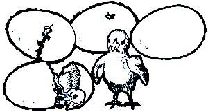
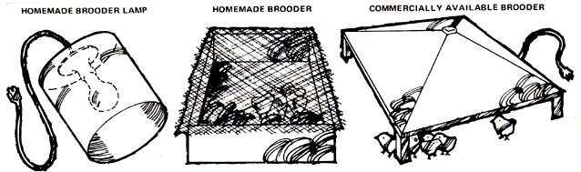

From Country Women: A Handbook for the New Farmer by Jeanne Tetrault and Sherry Thomas, copyright ©1976 by the authors. Reprinted with the permission of Anchor Press/Doubleday, Garden City, New York.
Dollar for dollar and pound for pound, poultry - especially chickens - has got to be the all-time best livestock that any homesteading family can raise. A flock of a half dozen to 50 birds will (if allowed to roam freely by day and protected from predators at night) provide endless entertainment, exert a positive control on any mini-farm's insect population, and set the table with both fresh eggs and tasty meat.
And it's so easy to get started with poultry! Day-old chicks are readily available by mail and/or from local hatcheries and feed stores in almost every part of the country. (One caution: You should deal only with reputable sources that certify their little cheepers to be registered and guaranteed U.S. - Pullorum - Typhoid Clean. That'll protect your flock, right from the start, from the two worst poultry diseases.)
It doesn't matter whether you've started a new batch of chicks every spring for the last 25 years or you're still anxiously looking forward to your very first flock. This is the time of the year when at least one member of almost any farmstead family (or would -be farmstead family) begins to scan the pages of hatchery catalogs and to check poultry breed books out of the library. Begins to mentally compare the egg production of Leghorns against the meat production of Black Australorps, the meat and eggs of the Rhode Island Red against the novelty value of the Araucana, the foraging ability of the Black Minorca against the setting and mothering instinct of the Columbian Wyandotte. (See "The Big Chicken Chart", a special foldout in Mother Earth News, No. 38.)
This is the time of the year, in short, to think and talk about chickens! And about how to select a breed and raise day-old chicks into hearty hens and roosters. So give a listen, if you will, to Jeanne Tetrault and Sherry Thomas, two country women who can more than keep up their end of the conversation.
No puzzle at our farm: The chickens came before the eggs. Twenty-five Plymouth Rock chicks ("steady layers of good size brown eggs") arrived lively and healthy in a cardboard carton at our post office - tiny, fluffy yellow Easter card specials - the beginnings of our flock. Raising those cheepers was a learning-by-doing experience. Five years and hundreds of chicks later, I'm still learning about raising chickens, but some of the basics are quite familiar. (See "A Poultry Mini-Manual," Mother Earth News, No. 7 and"Selecting a Breed and Getting a Start," Mother Earth News, No. 38, for further coverage of fundamentals.)
We fancied our farm incomplete without a few solid, sensible hens scratching around the barnyard and a rooster to crow us awake. Most people won't want to part with good layers, and we didn't want to buy commercially raised pullets, so we decided on day-old chicks. These can be "straight run," or "ninety-five percent pullets." If you eat meat, straight-run chicks are a good way to simultaneously start a laying flock and raise some healthy table fare. If you just want a flock of laying hens, buy the 95 percent pullets. These will be more expensive per chick, but you won't have a surplus of unwanted males at the end of six months. You will probably end up with a few cockerels out of every twenty-five chicks, but if you want fertile eggs you'll have to keep one rooster for every twenty or so hens. (See "How to Sex Day-Old Chicks", Mother Earth News, No. 27.)
Some places sell only debeaked chicks; others perform the operation upon request. The end of each baby's beak is clipped short, supposedly to keep it from pecking at and harming its companions. We never bought debeaked birds, and never had any problems with pecking; the practice seems to me to be unnecessary and ugly. Debeaking also makes it difficult for chickens to peck and pick up grains.
There are many breeds of chickens. Each has certain characteristics: coloring, body type, egg type and production, and so forth. There are dual-purpose breeds such as Rhode Island Reds and Barred Plymouth Rocks. These are heavy enough birds to be good meat sources and are also good layers (their eggs are large and brown). White Leghorns are a lighter body type and more suitable as strictly layers (their eggs are large and white and they are prolific layers). Bantams are small, hardy birds that lay small eggs but are very resourceful at foraging for their food, and excellent mothers for their own or foster chicks. There are innumerable "fancy" breeds of chickens with distinctive feathering, mops and flounces, and beautiful coloring. You would probably do well to start with a basic laying flock of Rhode Islands or Leghorns before yielding to the aesthetics and interesting possibilities of the fancier varieties.
How many chicks to start with? In her first laying season, a hen will usually lay an egg a day in good weather and drop to one every other day in winter. In winter she will also take a month or two off to moult. As a biddy gets older, her egg production will drop off some and may become more erratic. But unlike the commercially kept "egg machine" chicken who is kept at top production with medicated feed and total confinement (and burns out in about a year as a result), the healthy farm hen will lay fairly well for three years or more. You can either buy enough chicks for your own needs or buy enough to produce surplus eggs to sell. If you keep roughly twice as many layers as you need, you can usually sell half your eggs for a fair price and make enough money to pay for all of your chicken feed. Don't buy more chicks than you can adequately house, though. Overcrowding is certain to cause more problems than it is worth.
If you're buying your cheepers at a hatchery or feed store, make sure they look alert and healthy. Pick up each one gently and check its rear end, it should be clean and fluffy. If the rear around the vent is wet, sticky, or soiled, don't buy that chick. It is sick, either from being chilled or improperly fed, or it has a disease. You should think twice about buying any from that batch. Diseases in baby birds (and even older poultry) are usually highly contagious and often fatal. If you get "mail order" chicks, be sure to open the packing crate at the post office. Chicks that are dead on arrival should be replaced by the hatchery. Usually a few extras will be added to each order to cover this possibility of fatalities, but now and then the chicks will come through in very bad shape. You will need certification from your post office people to insist upon replacements if the hatchery you are dealing with is difficult about this. We had one very bad experience which taught me this caution.
A mother hen is the ablest baby chick raiser. She will keep them warm under her feathers, protect them from predators and teach them to forage for food and drink water. When they're old enough, she'll teach them to fly or hop up to roost. As they mature, the hen will cease protecting and herding her youngsters, gradually forcing them to fend for themselves. If your chicks were incubator-hatched, though, you'll have to fill in on all these matters.
One common brooder is a metal canopy with curtained edges and a heating element inside. The little ones can go under it whenever they get cold and should probably be confined under it for their first few days. If you have electricity connected to your outbuildings, the substitute mother can go in the corner of your chickenhouse or in any protected room. Brooders prices vary, depending upon size and elaborateness. You may be able to design and build one yourself quite easily. The kerosene-run kind are also available, though a little harder to find. You can also buy special electric heat lamps of various types and make your own brooder using one of these. If you want your house alive with chirps and feathers and want to really see your chicks grow, raise them inside! A simple cardboard box with a wire (screen) top is perfect for little chicks. The wire top will keep cats out and chicks in. The container can be easily replaced as the chicks grow, and a new one used for each batch (this helps prevent disease). Line the bottom with newspaper and change it daily. Wood shavings or shredded straw can also be put in as litter. For warmth you can use a small reflector lamp over the box. These are inexpensive or can be handmade, using a five-pound honey can with a bulb inside.
Choose the wattage of the bulb according to the room temperature, size of the reflector, size of the box and number and age of the chicks. Very young fowl kept in a fairly small box usually need a 75- or 100-watt bulb. As they grow their feathers, and can keep warmer, you can cut them down to a 50- or 25-watt bulb or move them to a larger box. Chicks that are too cold will huddle together in a corner and crush or suffocate one another. This piling up is noticeably different from their normal sleeping close to one another.
If you don't have electricity or a kerosene-run brooder, you can keep the chicks warm by placing them near the wood stove, or by putting a large jar full of very hot water and wrapped in a towel in the center of the box. This will have to be replaced often, though, particularly during cold nights. A double-walled box (which can be nothing more elaborate than one wooden or cardboard box set inside another) insulated with straw (stuffed between the walls) will also help to keep them warm.
As the chicks grow, their downy fluff is replaced with feathers and they become hardier and more chill resistant. When they are about a month old (wait longer if the weather is cold), you can begin hardening them off. This means that you gradually reduce the temperature of their brooder or wattage of their brooder bulb, and then begin introducing them to outdoor temperatures. At first, leave their lamp off during the day and put it back on at night. They may be put outside on sunny, warm days if they have an area sheltered from too much wind or sun.
After a few weeks of this treatment, the young cockerels and pullets will no longer need their lamp at night and may soon be moved to a permanent house outdoors, or to a small pen with a shelter attached (lock them in at night until they are accustomed to sleeping in the shelter).
Newly hatched chicks usually must be taught to drink water. A flat jar lid or dish will do for a waterer at first. Take one or two of the chicks and gently dip their beaks into the water. Once they learn to drink, others will learn by imitating them. Newcomers that have just been shipped in the mail or driven home from the feed store should be given water and taught to drink immediately, as they become severely dehydrated during transport. You can provide your chicks with a simple plastic waterer or a Mason jar with a plastic waterer base. This type of waterer provides a flow of fresh water as they drink, and doesn't get as quickly and easily soiled as a dish would. It must, though, be cleaned and refilled at least once daily. Trough-type or automatic dome waterers are available for large numbers of chicks.
A ready-to-hatch chick must peck its way out of the shell. This pecking motion is like the food-finding peck once the youngster is hatched, mobile and hungry. Scratching uncovers insects, grains and such, and, though the mother carefully teaches her brood to scratch and search, unmothered chicks seem to do this instinctively. Scattering their feed on the floor of their box is a good way to encourage these natural instincts. You can provide your little charges with special feeders (circular or rectangular tin, hopper or trough types), but they will usually scratch the feed out if they possibly can and seem to enjoy this most natural of activities. (See "My 'Scratch' Hens Lay Golden Eggs," Mother Earth News, No. 34.)
Commercially made baby chick mash is a fully balanced diet containing all necessary ingredients. It may, however, be made with unhealthy meat scraps (diseased parts of animals and birds considered "unfit for human consumption"). It is also commonly medicated with penicillin and/or contains preservatives. Chick mash made from soybean meal as a protein source and containing neither penicillin nor preservatives is available and is probably a healthier feed. If you feed a soybean-based mash, you should give your chicks a regular supply of milk in liquid or powder form, as they need some animal-based protein. "Baby chick scratch" is finely ground grains (corn, wheat, milo, etc.). It is not a complete feed but can be given with the mash or with other feeds, or used as a base for your own feed recipe.
You can mix your own baby chick feed by finely grinding grains and adding wheat germ, bran, sunflower seeds, powdered seaweed, alfalfa leaves and so on. The pint-size poultry must have adequate protein - 15 to 20 percent is desirable - in the form of powdered milk, fish meal, linseed meal and so on. Chicks must also have fine grit or sand to be able to digest their food. Ground oyster shell will pro ide calcium. Green food - comfrey, lettuce, chard, clover, etc. - should also be fed them. Feed the cheepers a little at a time as often as possible or give them free-choice with automatic or trough feeders. They won't overeat, but may waste a lot of food when free-choice fed.
As the chicks grow, they can handle coarser grains and are gradually switched over to laying mash and hen scratch. Compare ingredients of various commercial mashes, looking at content analysis versus price. Different grains will vary in price from area to area and season to season. Usually it's cheaper to buy grains separately and mix them yourself than to buy already mixed scratch. According to a table I found in an old poultry book, it takes about twenty-eight pounds of feed to raise a Rhode Island Red chick to age six months. A lighter breed chick (White Leghorn) will consume about twenty-four pounds. (See "How to Formulate Your Own Chicken Feed," Mother Earth News, No. 35.)
A healthy baby chick is bright, energetic and lively. If one individual doesn't rush up with the others to feed, or if it holds its feathers fluffed out or its wings away from its body and slightly down, it is either sick or suffering from a nutritional deficiency. Most of these signs also indicate a chill, and sometimes all the chick needs is more warmth. An insufficient amount of protein in the diet will make the chicks droopy or slow to grow and feather. Correcting the diet should have a noticeable effect fairly quickly. A single baby that is ailing should be separated from the others or it may be trampled by its stronger companions. It may also have a communicable disease. Keep it extra warm. A few drops of honey dissolved in warm water and given by eyedropper has a startling restorative effect on ailing fledglings. Bloody droppings and diarrhea are signs of a common disease that affects young chickens, coccidiosis. Chicks may also fail if they become infested with worms or external parasites. Buttermilk is said to be an excellent addition to the diet - discouraging parasite infestation and promoting rapid growth and feathering. The Herbal Handbook for Farm and Stable by Juliette de Bairacli Levy, gives good, sensible advice about raising and keeping healthy poultry without medicated feed. (Refer also to "Old-Time Remedies for Common Poultry Diseases," Mother Earth News, No. 26.) If you keep your chicks in clean quarters, give them fresh, clean water daily and feed them a diet both balanced and varied (with particular attention to protein level), you should have very few health problems.
There are a number of words peculiar to the language of poultry raising. It is important to know and understand these words when talking to other people about chickens. This helps avoid confusion, especially if a word possesses a different or more precise meaning than it has in common usage.
A bunch of chickens is officially called a flock. Adult female chickens are called hens, and adult males are called roosters or cocks. A male younger than one year is a cockerel, and a female under one year is a pullet. A baby chicken of either sex is called a chick. A capon is a cock whose sex organs have been deactivated by some means. Any such process is caponizing. Capons have characteristics that are desirable for meat production.
Chickens venture forth during the daytime, but they always return to the same place to sleep at night. This habit is called roosting, and the place they return to is the roost. They like to sleep with their toes wrapped around something like a tree branch or ladder rung, referred to as a perch. Anytime a bird is sitting on such a thing, whether it is sleeping or not, it is said to be perching.
Chickens come in two sizes: large and bantam (also called banty). Banties are not a separate breed or species; they are simply small chickens.
Chickens, like horses and dogs, come in different breeds. Purebreds are those of one single breed sharing distinguishing characteristics that make them all alike; chickens of mixed breed, often of unknown ancestry, are called barnyard chickens (or barnies). There are also hybrid-crosses or crossbreeds, developed for certain outstanding characteristics and produced by always mating chickens of the same two different pure breeds. Chickens that are purebred will breed true, which means that offspring of a pair of chickens of the same breed will also be of the same breed and will more or less have the same characteristics. Barnies of indeterminate origin, and to a certain extent hybrids and crossbreeds, will have offspring with wild conglomerations of characteristics that can rarely be predicted accurately (but are often spectacular).
Pure breeds are grouped into different classifications, which usually tell the place of origin. Some classifications are Asiatic, American and Mediterranean. New Hampshire Red is one of the breeds of chickens within the American classification, for example, and Leghorn is a breed within the Mediterranean classification. Breeds themselves are broken down into varieties, which tell more about the chicken. Brown Leghorn and White Leghorn are two varieties of the Leghorn breed. (Incidentally, Leghorn is pronounced LEG-ern.)
The Standard refers to the Standard of Perfection, a book published by the American Poultry Association, which describes the appearance of each breed and variety - color, weight, shape, feathering, etc. If you want to show your chickens at the fair, they should conform to the Standard; the extent to which they do determines the prizes they get. A standard-bred chicken is any one which appears in the Standard of Perfection. (The word "standard" is sometimes used incorrectly to refer to large-sized chickens, as opposed to bantams.)
The polite word for chickens' excrement, or manure, is droppings. The polite word for the opening it comes out of is the vent, which also happens to be the opening the eggs come out of. The eggs come along a different track, however, known as the oviduct. Just in front of the vent on the underside of the chicken are the pubic bones ... two sharp, pointed bones coming back from the breastbone.
Chickens eat differently than we do. They don't have teeth or stomachs. When they eat, food goes directly into a little pouch at the base of their necks called a crop , which bulges after a meal. Eventually, food passes further inside to the gizzard, where it's ground up for digestion. The grinding agent, whatever it may be, is called grit. You'll have to purchase some at the feed store to give your chickens if they can't get it naturally in the form of pebbles. The traditional chicken feed is called scratch, which consists of a mixture of various grains. Chickens are called ground-fed when they are not kept in cages and can find food by foraging.
There are a few miscellaneous parts of a chicken's anatomy you may hear about. The part of a chicken's leg from the foot to the first joint is known as the shank. It is usually naked and scaly, but in some breeds feathers grow all the way to the ground. Spurs are the sharp horny protrusions on a cock's shank which he uses to stab people he doesn't like. He also uses them in fights with other cocks. Their length and condition give you a rough idea of the cock's age. The superstructure on a chicken's head is called the comb, and the dangly things under the chin are wattles.
The words "mate" and "breed" are not quite synonymous. Mating refers to the forming of an allegiance between a male and a female, or sometimes a male and several females. Mated birds hang around together and have more social interaction with each other than with the rest of the flock. Wild birds tend to form strong matings, sometimes seasonal, sometimes for life. Chickens exhibit this behavior only mildly in that roosters usually try to gather harems of hens to supervise. These liaisons are easy for the keeper to rearrange or terminate (while those of, say, geese or mallard ducks are not). Breeding refers specifically to the performance of the sexual act. This word is also used in another sense: to refer to the genetic control exercised by a keeper to ensure offspring are produced only by certain pairs of birds that he chooses.
(The preceding has been excerpted from Chickens In Your Backyard by Rick and Gail Luttmann, copyright ©1976 by the authors, and has been reprinted with the permission of Rodale Press, Inc. Emmaus, Pa.)
MORE WORD YOU SHOULD KNOW
Where To Purchase Chicks
The best time to start your flock is in late March, April or May, especially if you live in a northern climate. Chicks hatched at that time of the year won't need cold weather brooding facilities and, better still, they'll begin to lay in early fall and will keep producing for a full 12-month cycle.
You should order your chicks at least four weeks in advance of the date you'd like to start them. Any hatchery that operates under the National Poultry Improvement Plan (call the U.S. Department of Agriculture in your state for listings of these hatcheries, which are required to test their breeding flocks for the major poultry diseases) is a good source, or try local stock outlets recommended by your County Extension Agent or Extension Poultry Specialist.
|
 |
 |
|